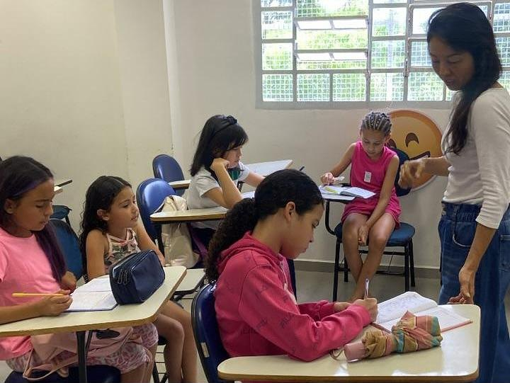
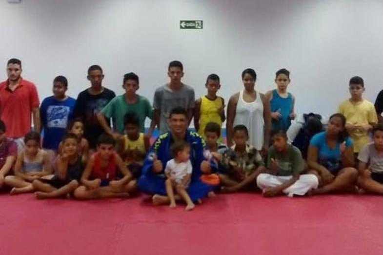

Jiu-jítsu
As aulas são com Clóvis Martins Faustino, professor faixa-preta, que criou o projeto e segue no tatame com as crianças.
Aulas gratuitas de jiu-jítsu e inglês para crianças no bairro Vassoural, em Louveira (SP).

As aulas são com Clóvis Martins Faustino, professor faixa-preta, que criou o projeto e segue no tatame com as crianças.

As mesmas crianças estudam inglês no projeto, também de graça. Às vezes a língua entra no treino: Lucas Sakae, professor da Garra BJJ, já deu ali uma aula de jiu-jítsu em português e inglês, como conta o relato da Garra BJJ.
[Outras atividades do projeto]
As turmas são gratuitas. Para colocar uma criança no projeto, fale com a equipe pelo Instagram, que responde com dias, horários, endereço e vagas.
Mandar mensagem para @projetovassoural
Sua família precisa de apoio com alimentos? Pode usar o mesmo canal. Como funciona o apoio


Clóvis criou o projeto e responde por ele. É professor faixa-preta de jiu-jítsu e professor da Keisei. Em 2017 ele já coordenava, com a sua equipe, as aulas gratuitas de jiu-jítsu da cidade, entre elas as do Centro Comunitário do Vassoural, segundo a Prefeitura de Louveira.
O projeto leva o nome do bairro. [Como surgiu o nome Projeto Vassoural]
[Quem divide o trabalho com Clóvis hoje]
[Data]
Lucas Sakae, professor da Garra BJJ, visitou o Vassoural e conduziu a aula de jiu-jítsu nas duas línguas que as crianças aprendem no projeto. Ler o relato
Outubro de 2026
As crianças do projeto ganharam calçados personalizados, e cada uma decidiu como queria o seu. Ver a publicação
[Nome, idade, turma]
[Um relato curto sobre a primeira aula, uma conquista no tatame ou algo feito na aula de inglês.]
O projeto recebe alimentos, contribuições e o tempo de quem mora e trabalha em Louveira. Os alimentos viram cestas básicas para famílias da cidade.
Deixe numa Caixa Mágica Solidária ou num ponto de entrega do projeto. O que doar e onde
Fale com o projeto enquanto o canal oficial de doação é confirmado. Como contribuir
Receba uma Caixa Mágica Solidária na sua loja ou ofereça o seu tempo à equipe. Como entrar
Mais de 100 cestas
saíram do primeiro Truco Solidário, em agosto de 2026, segundo o projeto.
[Como o torneio virou arrecadação e para quem foram as cestas]
Tudo o que foi arrecadado e entregue